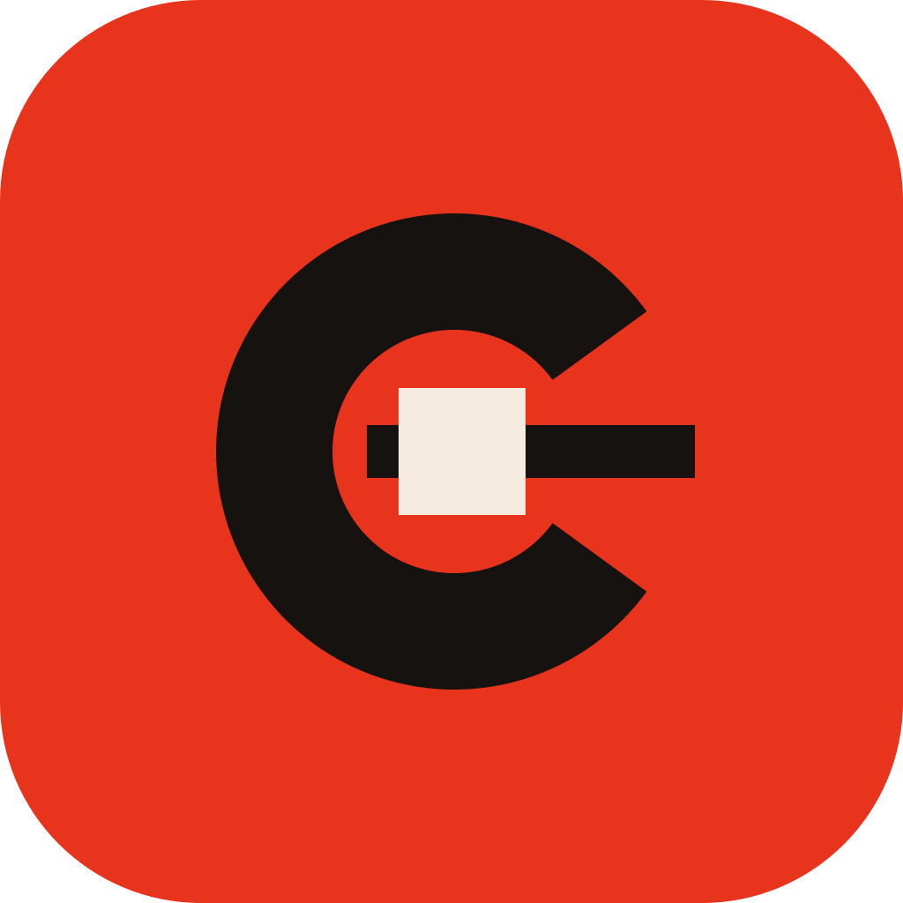

02logo e construção

Grade 10×10. Anel de 22 u (raio 34) aberto a ±45°; espeto 10 u cruza o vão e sai do anel; brasa 24 u alinhada ao eixo. Lettering em Anton, caixa baixa, tracking −20, altura de x igual ao vão do "c". Área de proteção = 1 brasa.